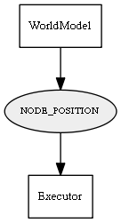

Global overview
All modules
All variables
All commands
Mission files
Pipelines
Variable: NODE_POSITION
Variable info:
Variable name
Short description
Who publishes it?
Who subscribes to it?
NODE_POSITION
geometric position of a node in response to the "GET_NODE_POSITION" var.
WorldModel
Executor
Variable graph:

Detailed description:
geometric position of a node in response to the "GET_NODE_POSITION" var.
Page generated by
Mooxygen 1.1.0
at Thu Jan 22 11:30:21 2015